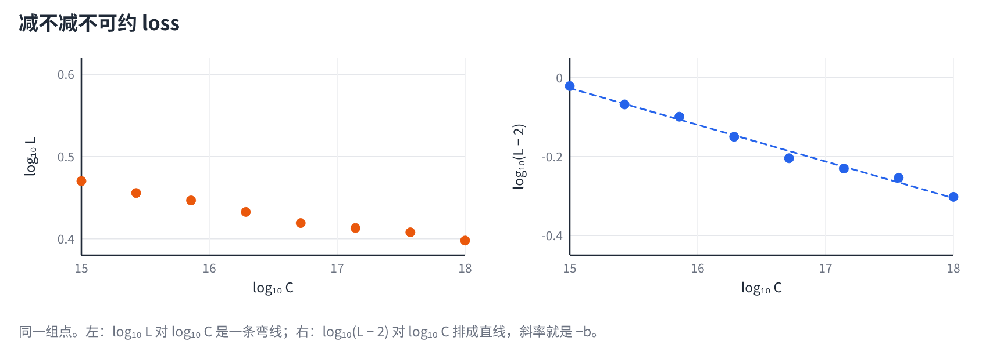
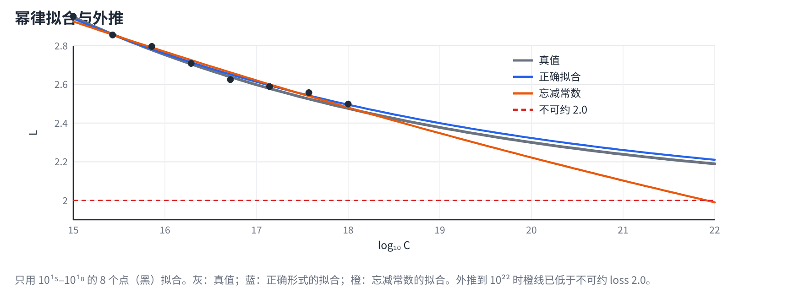
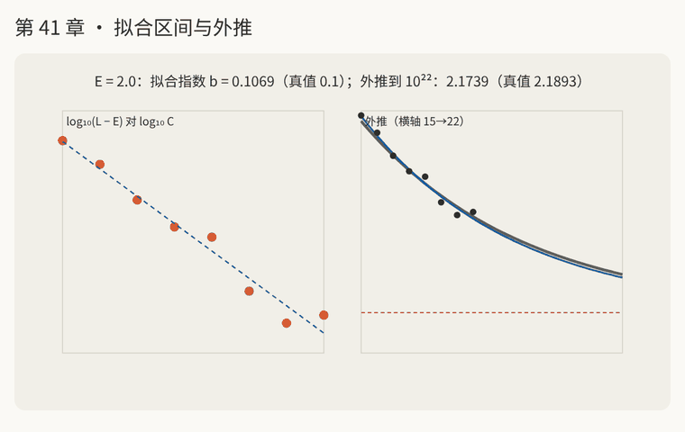

第 41 章 · Scaling law：幂律与 log-log 拟合、Kaplan 与 Chinchilla、计算最优、6ND、外推误差
本地运行
git clone https://github.com/wikieden/math-and-eval-stats
cd math-and-eval-stats/code/notebooks
pip install jupyterlab torch numpy
jupyter lab ch41_scaling_law.ipynb也可以下载后直接用 VS Code 打开 .ipynb 运行。需要 GPU 的章节在 Colab 里选「代码执行程序 → 更改运行时类型 → GPU」。
本章回答：loss 随算力、参数、数据下降的"幂律"是什么意思，怎么拟合？为什么拟合时不可约 loss 不能忘？Kaplan 和 Chinchilla 为什么给出了不同的"最优模型大小"？训练一次要多少 FLOPs？从小实验外推到大模型，误差会放大多少？
讲解日期：2026-11-25 · 上一章：第 40 章 张量的数学 · 下一章：第 42 章 参数化与初始化
对应原文：Kaplan 2020math-and-eval-stats/materials/text/papers/kaplan-scaling-laws-2001.08361.txt（C ≈ 6NBS L318、L378；固定算力时 N ∝ C^0.73 L290–L298）；Chinchilla（Hoffmann 2022）math-and-eval-stats/materials/text/papers/chinchilla-compute-optimal-2203.15556.txt（§3.3 Approach 3 L324；附录 D.2 参数化拟合 L(N, D) = E + A/N^0.34 + B/D^0.28，E = 1.69、A = 406.4、B = 410.7，L1447–L1521）
本章缩写：N = 参数量；D = 训练 token 数；C = 训练算力（FLOPs）；FLOPs = FLoating-point OPerations（浮点运算次数）；E = 不可约 loss；α、β = 参数、数据的幂律指数。全部缩写见 附录 · 缩写与术语表
讲解
第一步：幂律在 log-log 上是直线，但要先减掉不可约 loss（2026-11-25）
类比：往一桶水里加墨水，颜色越来越深，但永远深不过墨水本身。 loss 也一样：随算力下降，但有一个降不下去的底（数据本身的熵）。
减掉 E 以后才是一条直线，斜率就是 −b。
例子（用一个已知的规律 L = 2 + 30·C^{−0.1} 在 10¹⁵ 到 10¹⁸ FLOPs 之间造 8 个点，加 1% 噪声）：
| 拟合方式 | 拟合出的指数 b（真值 0.1） |
|---|---|
| 减掉不可约项 2.0 | 0.0929 |
| 忘了减，直接拟 log L | 0.0239（低估 4 倍） |

图 41-1 · 左：直接画 log L 对 log C，点排成一条弯线；右：画 log(L − 2) 对 log C，点排成直线，斜率就是 −b忘了减常数，曲线在 log-log 上是弯的，硬拟一条直线，斜率被严重低估。实际中 E 也是未知的，要和 a、b 一起拟（非线性最小二乘，Chinchilla 用的是 Huber 损失）。
一句话：幂律 L = E + aC^{−b} 减掉不可约项才是 log-log 直线；不减会严重低估指数。
第二步：外推：差一点的指数，放大 1000 倍以后（2026-11-25）
只在 10¹⁵–10¹⁸ 上拟合，往外推：
| C | 真值 | 正确拟合 | 忘减常数 |
|---|---|---|---|
| 10¹⁸ | 2.4755 | 2.4952 | 2.4804 |
| 10²⁰ | 2.3000 | 2.3229 | 2.2218 |
| 10²² | 2.1893 | 2.2105 | 1.9902 |
1% 的噪声让指数差了 7%，外推 10000 倍后误差约 0.02；形式错了（忘减常数），外推到 10²² 时预测的 loss 甚至比不可约 loss 2.0 还低，完全不可信。

图 41-2 · 横轴算力（对数），纵轴 loss；黑点是拟合用的 8 个点，灰线是真值，蓝线是正确拟合的外推，橙线是忘减常数的外推；越往右分得越开一句话：外推放大的是指数误差；形式错了的拟合在拟合区间里看起来一样好，外推出去就离谱。
第三步：Kaplan vs Chinchilla：算力该分给参数还是数据（2026-11-25）
训练算力 C ≈ 6ND（下一步）固定，在 N 和 D 之间怎么分？
- Kaplan 2020：N ∝ C^0.73（L290–L298）：算力翻倍，大部分给模型变大，数据只多一点；
- Chinchilla 2022：拟合 \(L(N, D) = E + A/N^\alpha + B/D^\beta\)（附录 D.2：E = 1.69、A = 406.4、B = 410.7、α = 0.34、β = 0.28），在 6ND = C 约束下求最小值：
参数和数据大致同比例增长，经验法则是每个参数约 20 个 token。
例子（同样约 5 × 10²³ FLOPs）：
| 模型 | N | D | 6ND | 预测 loss |
|---|---|---|---|---|
| Chinchilla | 70B | 1.4T | 5.88 × 10²³ | 1.9366 |
| Gopher | 280B | 300B | 5.04 × 10²³ | 1.9933 |
差异的主要原因：Kaplan 对所有模型用了同一个学习率调度长度，小模型没训到位，看起来"数据没用"；Chinchilla 对每个规模调了调度。
一句话：Chinchilla 的参数化拟合给出 N、D 大致同比增长（约 20 token/参数），Kaplan 偏向大模型是因为调度没对齐。
第四步：6ND：训练一次要多少 FLOPs（2026-11-25）
每个 token、每个参数：前向一次乘加 = 2 FLOPs，反向约是前向的 2 倍 = 4 FLOPs，合计 6（Kaplan L378）。
例子：
| N | D | D/N | 6ND |
|---|---|---|---|
| 1B | 20B | 20（Chinchilla 最优附近） | 1.2 × 10²⁰ |
| 1B | 1T | 1000（远超最优，“过训练”） | 6.0 × 10²¹ |
现在的开源小模型普遍远超 20 token/参数：训练贵一些，但推理用的是小模型，总成本（训练 + 大量推理）更低。scaling law 回答的是“固定训练算力下 loss 最低”，不是“总成本最低”。
场景代码：用 scipy 拟合三参数幂律（真实库调用；和本章代码一样，只是多拟一个 E）：
from scipy.optimize import curve_fit
f = lambda logc, e, loga, b: e + np.exp(loga - b * logc)
(e, loga, b), _ = curve_fit(f, np.log(c), loss, p0=[1.5, 3.0, 0.1])
一句话：训练 FLOPs ≈ 6ND；Chinchilla 最优约 20 token/参数，但考虑推理成本时常常故意过训练小模型。
动画演示：拟合区间与外推

可交互版：animations/41-scaling-law.html（滑块调假设的不可约 loss E 和拟合用的最大算力）。
怎么看：
- 左边是 log(L − E) 对 log C 的散点：E 取对了（2.0）点排成直线，取错了就弯（第一步）；
- 右边是外推曲线和真值；把拟合区间拉宽，外推误差变小；E 取错时外推越走越偏（第二步）。
练习与作答记录
题 1（第一步）：L(C) = 1.8 + 50·C^{−0.05}。C 从 10²⁰ 变到 10²¹，可约部分（L − 1.8）缩小为原来的多少倍？
作答：（待作答）
题 2（第三步）：用 Chinchilla 的指数 a = 0.452，算力变成 100 倍时，最优参数量和最优数据量各变成多少倍？
作答：（待作答）
题 3（第四步）：一个 3B 参数的模型训练 300B token，要多少 FLOPs？如果一张卡实际跑出 400 TFLOP/s，要多少卡·天？
作答：（待作答）
口诀
幂律先减底，log-log 才是直线；
外推放大的是指数误差，形式错了更离谱；
Chinchilla 参数数据同步长，约二十 token 一个参数；
训练算力六 N D；推理多就故意过训练。
本章复习卡片
ST136（幂律拟合要减不可约 loss；外推误差）、ST137（Kaplan vs Chinchilla 的最优分配）、ST138（6ND 计算账与过训练）。练习做完后，按答错、卡住的地方补上。
附录 · 延伸阅读
留给以后深入学习用，不影响本章主线。★ 是建议先读的。
推荐阅读
| 读什么 | 读哪里 | 读它为了什么 |
|---|---|---|
| ★ Chinchilla（Hoffmann 2022） | §3（三种方法）、附录 D.2（L1447–L1521） | 计算最优的分配与参数化拟合 |
| ★ Kaplan 2020 | §2（6N 计算账）、§6（最优分配，L290 起） | 原始 scaling law |
| 《从约束推导 AI Infra》第 56 章 训练预算 | 全章 | 从 FLOPs 到 GPU 小时的工程账 |
| 第 12 章 SVD 与最小二乘 | 全章 | 对数变换后的线性最小二乘 |
| 第 7 章 读曲线与消融 | 全章 | 拟合曲线时的统计注意事项 |
数学原理
- 对数线性化：y = aC^{−b} ⇒ log y = log a − b log C；只有 y 本身是纯幂律时成立。
- 约束最优：min A/N^α + B/D^β s.t. ND = C/6，拉格朗日条件 αA/N^α = βB/D^β，解出 N ∝ C^{β/(α+β)}。
- 6ND：前向每个参数一次乘加（2 FLOPs/token），反向对激活和权重各求一次梯度（4 FLOPs/token）；不含注意力里和序列长度平方相关的部分。
- 外推误差：log L 的预测误差 ≈ (Δb)·Δlog C，外推距离越远线性放大。
公式清单
| 公式 | 意思 |
|---|---|
| \(L(C) = E + aC^{-b}\) | 算力幂律 |
| \(L(N, D) = E + A/N^\alpha + B/D^\beta\) | Chinchilla 参数化形式 |
| \(N_{opt} \propto C^{\beta/(\alpha+\beta)}\) | 最优参数量 |
| \(C \approx 6ND\) | 训练算力 |
代码对照：把本章的数字用代码算一遍
代码在仓库本地
math-and-eval-stats/solutions/chapter-code/ch41_scaling_law.py，配套测试tests/test_ch41.py：
bash cd math-and-eval-stats/solutions/chapter-code uv run python ch41_scaling_law.py uv run pytest tests/test_ch41.py
讲义 ↔ 代码：
| 讲义 | 公式 | 写法 | 跑出来 |
|---|---|---|---|
| 第一步 拟合 | log-log 直线 | fit_power(c, l, 2.0) |
b = 0.0929 |
| 第二步 外推 | a·C^{−b} | extrapolate(a, b, 1e22, 2.0) |
2.2105（真值 2.1893） |
| 第三步 Chinchilla | E + A/N^α + B/D^β | chinchilla_loss(70e9, 1.4e12) |
1.9366 |
| 第三步 最优指数 | β/(α+β) | opt_exponents() |
0.452、0.548 |
| 第四步 6ND | 6·N·D | flops_6nd(1e9, 20e9) |
1.2e20 |
关键几行：
slope, inter = np.polyfit(np.log(c), np.log(np.asarray(l) - irreducible), 1) # 先减常数再取对数
return E + A / n ** ALPHA + B / d ** BETA # Chinchilla 形式
return BETA / (ALPHA + BETA), ALPHA / (ALPHA + BETA) # 最优分配的指数
代码里才看得到的 3 件事：
- 噪声是乘性的：loss 乘以 (1 + 0.01·ε)，在对数空间里近似加性，正好符合 log-log 拟合的假设。
- 拟合时假设 E 已知：真实拟合要把 E 也当参数，用
curve_fit或 Huber 损失；这里固定 E 是为了把“减不减常数”的影响单独拿出来看。 - 没有用 Chinchilla 论文表里的数据点：拟合真实数据、按给定 FLOPs 求最优 N / D、估 7B 的 GPU 小时，留给自己做（里程碑 ME-M26）。
自己改一改（不影响练习答案）：
- 把噪声从 1% 改成 3%，指数和外推误差怎么变？
- 把拟合点的范围改成 10¹⁵–10²⁰，外推到 10²² 的误差能小多少？